The feel
Cyberpunk is the near future seen from the street, and Blade Runner set its template: mean, drizzling, crowded streets lit by enormous advertisements, with street junk next to high tech.1 William Gibson describes Shinjuku the same way, nameless neon streets swarming with electronic advertising under a misting rain that softens the commercials on huge façade screens.2 Mamoru Oshii filled Ghost in the Shell's city with so much information that nobody can take it all in at one viewing.3
It works through contrast: Night City is a chaotic mix of luxury and poverty, with high-tech riches next to rough urban areas.4 The genre's insight is that better technology does not necessarily mean a better life while wealth is shared out unequally, and its villain is usually a multinational corporation.5 Under the neon it is noir: Blade Runner's design started from the world of the hard-boiled private eye, a city 40 years in the future and 40 years in the past at once.6
- rain-slick
- overloaded
- corporate
- back-alley
- wired
- for sale
Where it comes from
The word was almost certainly coined by Bruce Bethke in his story "Cyberpunk" (Amazing, November 1983), and Gardner Dozois took it up for a literary movement whose main writers at first were Bruce Sterling and William Gibson.1 Gibson's first novel, Neuromancer (1984), shaped what the word came to mean, and on film Blade Runner (1982) was an important forebear.1 Katsuhiro Otomo's Akira began as a manga in Young Magazine in December 1982 and reached Japanese cinemas in July 1988.7 Mike Pondsmith's role-playing game Cyberpunk (1988) was later adapted as the video game Cyberpunk 2077 (2020).8
Core elements
Street-level technology
Technology meets the street: Bruce Sterling's preface to Mirrorshades ties the movement to an unholy alliance of the technical world and the underground world of pop culture and street-level anarchy.9 Blade Runner's streets alternate street junk with high tech.1
Neon signs as the main light
Advertising lights the street.1 On Blade Runner's set, dozens of neon signs gave the New York Street its character and its lighting, and the signs out of shot stayed at full brightness as the main light source.10 Even umbrellas glowed, with fluorescent tubes in their shafts lighting the faces beneath.10
Information overload
The city is overloaded with information: Ghost in the Shell expresses that overload through its backgrounds, with rows of gigantic billboards and posters, crowds, planes in the sky and boats below.3 Syd Mead used Asian lettering on Blade Runner's streets to add density without the distraction English signs would cause an American audience.6
Retrofitted architecture
Nothing is torn down, only added to: Ridley Scott imagined buildings too costly to replace, so new services are bolted on and the city wears its guts on the outside, a look Syd Mead called accumulative accretion.6 Gibson sees the same in Tokyo, where older layers of futuristic design show through as the newer ones peel.2
Noir lighting with smoke and rain
Blade Runner's lighting is classic noir: Jordan Cronenweth used contrast, backlight, smoke, rain and lightning, and its signature is warm, soft uplight in front against hard backlight and smoke behind.10 When it rains at night, the first thing everyone notices is the long, stretched reflection of each bright light.11
Cybernetic bodies
Bodies are opened up and upgraded: Sterling names body invasion as a central cyberpunk theme, from prosthetic limbs and implanted circuitry to cosmetic surgery and genetic alteration.9 Money decides who gets what: Deus Ex: Human Revolution shows a world divided between people who can afford cybernetic augmentations and people who cannot.12
How to do it
Retrofit real facades
Start from ordinary buildings and add to them: Syd Mead worked from photographs of the existing street facades and overlaid pipes, ductwork and signs.6 Give every change a reason, as he did for the cars: polluted air means bigger air-conditioning units, congested traffic means bigger bumpers.6 Indoors, patch instead of repairing: tape things to the wall and leave wires hanging where a panel was torn out.6
Build the city vertically
Build the new city on top of the old: Mead sketched towers the size of the World Trade Center as the old buildings, new ones rising past 3,000 feet and an elevated network linking them, because decent people don't live below 60 storeys.6 The street becomes an access corridor, jammed with cars and big machines that people camp under.6
Light the street with neon signs
Use the signs as lamps: on Blade Runner, neon out of shot stayed at full brightness as the main light, neon in shot was often dimmed to just above the point where it would flicker, and accent lights made the street glisten.10 If your renderer lets emissive surfaces light the scene, keep the glowing areas from getting too small and bright: tiny, intense emitters can cause noise that is much harder to solve than placing real lights.13 Make plenty of signs: Cyberpunk 2077 has over 90 animated ads in several formats.14
Wet each material differently
Wet surfaces get darker and shinier, and rough, porous, dark materials change most.11,15 Sébastien Lagarde scales the dry colour by 1.0 to 0.2 according to porosity and blends the gloss towards water's 1.0, leaving smooth and metal surfaces undarkened.15 Worn asphalt with an albedo of 0.12 drops to about 0.08.15 In puddles, blend from the surface's normal map to a flat normal as the water deepens, and use water's properties.15
Backlight layered rain
Rain is hard to see except where it catches light, and splashes read best when lit from behind.11 For Remember Me, Dontnod drew rain as four layers of the same pre-blurred raindrop texture in front of the camera, each scrolling at its own speed and scale, with more drops in the far layers, and spawned splashes only in an area in front of the camera.16 Walls run parallel to the rain and stay almost dry.11
Add smoke and volumetric fog
Shafts of light need a medium: Blade Runner used smoke, justified by its polluted air, kept its density constant because small changes alter the contrast dramatically, and swept the city with searchlights from airships.10 In volumetric fog, keep the overall density low, raise the sun's scattering intensity and set the fog's scattering distribution to nearly 0.9, or add density only where you need it with local fog particles.17 Fast-changing lights such as muzzle flashes leave trails in volumetric fog, so set their scattering to 0.17
Base the HUD on the setting
Cyberpunk 2077's UI team wrote its rules into a UI art bible, built on the game's lore and technology.18 They made red the default colour, for a hostile, aggressive military system, against the convention that red signals malfunctions, warnings and danger, and they curved the HUD with a shader.18
Cheat sheet
- Main light
- Neon signs, those out of shot at full brightness10
- Neon in shot
- Dimmed to just above flicker10
- Lighting
- Warm soft uplight in front, hard backlight and smoke behind10
- Wet colour
- Dry × 1.0 to 0.2 by porosity; asphalt 0.12 to 0.0815
- Wet gloss
- Towards water's 1.0; puddles flat15
- Rain
- 4 layers of one pre-blurred texture16
- Light shafts
- Low fog density, scattering distribution near 0.917
- Class styles
- Entropism, Kitsch, Neomilitarism, Neokitsch4
Do
- Give each class its own look. Night City has four: Entropism for the poor, Kitsch for the middle class, Neomilitarism for the megacorporations and Neokitsch for the ultra-wealthy.4
- Show what can't be seen. Oshii drew wireless connections as cables, because in animation only images have power.3
- Pack in more detail than anyone can take in. Oshii says layers of fine detail make fictional worlds feel more real.3
- Let the street find its own uses for things, in Gibson's phrase: Sterling's cyberpunks are fascinated by those interzones, from spray-can graffiti to the subversive photocopier.9
- Keep it moody. Human Revolution's art director calls something very thick with mood a visual archetype of cyberpunk.19
Avoid
- The clean future. Ridley Scott made Blade Runner against films that show the future with "a rather bleak, pristine, austere, clean look".6
- Shiny suits and silver hair. Scott wanted to avoid what he called "the diagonal zipper and silver-hair syndrome", so Blade Runner's costumes used 40-year-old styles.6
- Asian lettering, accents and katanas as exotic decoration. Critics trace this techno-orientalism to Western anxieties about the East, and Deus Ex: Mankind Divided stayed unmistakably cyberpunk with little Asian iconography.5
- One wet setting for every surface. Most games darken and brighten all wet surfaces by the same factors, whatever their roughness, porosity or metalness.15
- Shine in place of art direction. Jacques-Belletête says the industry still thinks art direction means making a game shinier than the next one, and that isn't it.19
Tools and tutorials
- How to model a cyberpunk building
A five-minute walk through one neon-lit building by Vlabs.
- Rain and puddles in Unreal Engine
LoneWolf Studio builds the wet-ground material step by step.
- Lumen documentation
How Lumen lights a scene from emissive signs, and where it gets noisy.13
- Volumetric fog documentation
Unreal Engine's settings for light shafts in fog, and how to stop muzzle flashes leaving trails.17
- Rajdhani
A free condensed square sans, ready for a HUD.
- Aseprite
For the VA-11 Hall-A route: layers, palettes and animation at low resolution.
- Water drop series
Sébastien Lagarde's posts on rain, puddles and wet surfaces, from his work on Remember Me.11
Palette
Sampled from Cyberpunk 2077, Akira, Deus Ex: Human Revolution and VA-11 Hall-A.
Feel the vibe
Listen
From Cyberpunk 2077's score. Listen for the distorted synths that keep climbing.
YouTubeFrom Akira. Otomo asked Shoji Yamashiro only for music built on two ideas, festival and requiem.20
YouTubeOshii asked for primitive drums; Kawai added a chorus, planned in a Bulgarian style and sung by Japanese folk singers.21
YouTubeThe main theme of Deus Ex: Human Revolution. Play it while you study the black and gold.
YouTubeFrom VA-11 Hall-A, where you play the bartender, not the hard-boiled hero.22
YouTube
More references
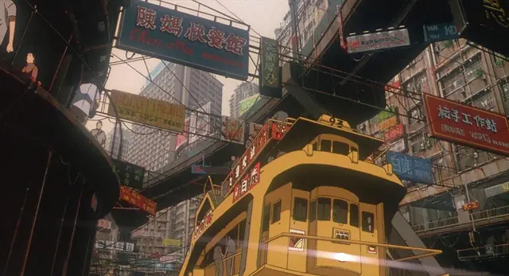
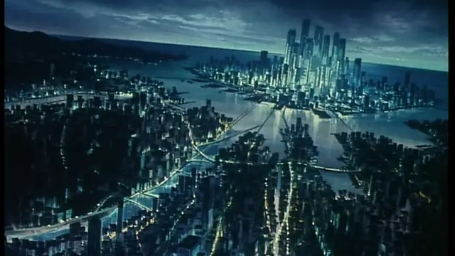
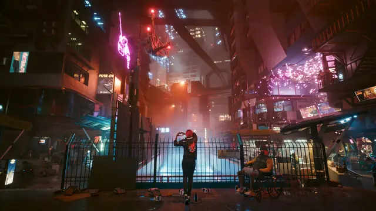
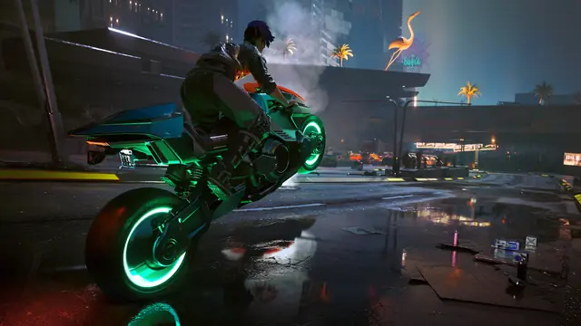
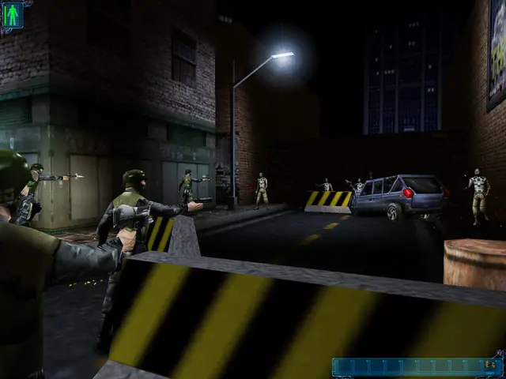
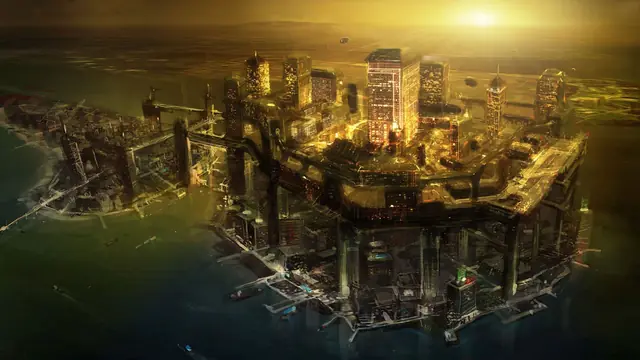
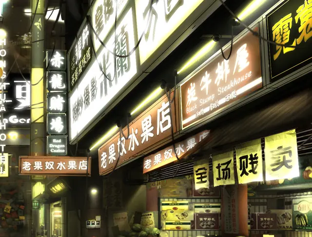
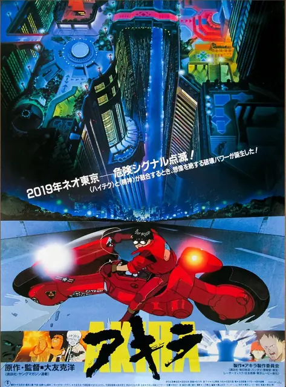
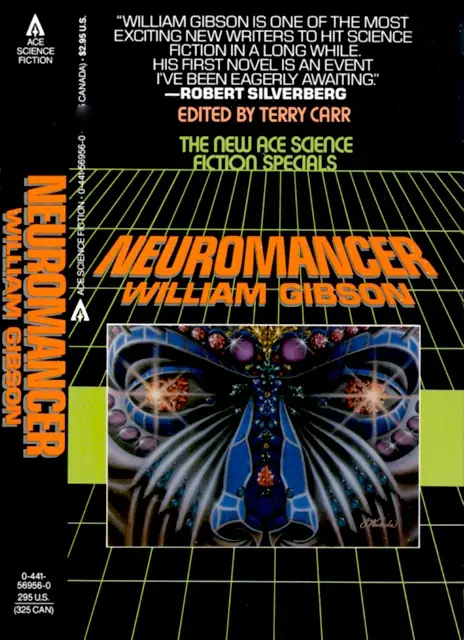
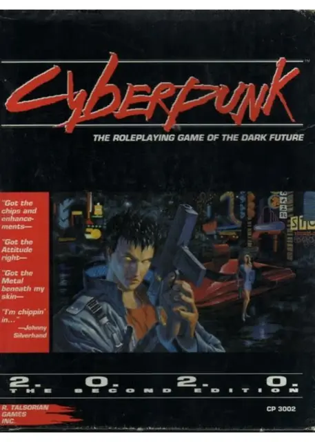
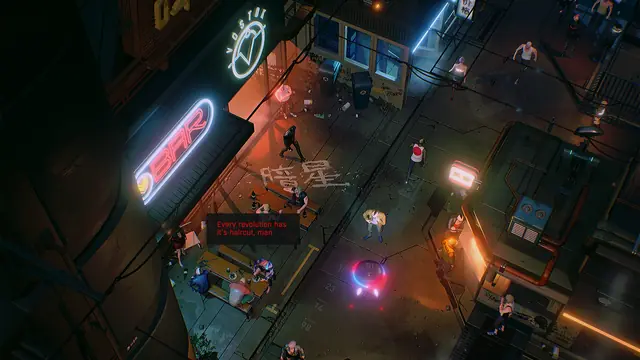
Games
- Cyberpunk 2077
Study its four styles, from Entropism for the poor to Neokitsch for the ultra-wealthy.4
- Deus Ex
Study how darkness and fog carry its night-time New York and Hong Kong.
- Deus Ex: Human Revolution
Study the reduced black and gold palette, and how the Renaissance details grow the more a place favours augmentation.19
- Snatcher
Hideo Kojima's adventure game. Study how its still scenes and text build the city.
- Syndicate
Bullfrog's isometric corporate future. Study how a cold, grey city takes small neon accents.
- VA-11 Hall-A
Its main visual influence is old PC-98 games, chosen because they look futuristic, not just retro.22 Study how much world it fits into one bar.
- RUINER
Study how far one hard red accent carries a top-down game.
- The Ascent
Study how it shows a vertical arcology from above, dense with signs and steam.
Film, art and more
- Blade Runner
The template for the genre's streets,1 lit by dozens of neon signs and glowing umbrellas.10
- Akira
Study how much colour its night windows carry.
- Ghost in the Shell
Its city draws on Hong Kong, whose clashing atmosphere Oshii felt suited the film.3
- Neuromancer
Gibson's first novel, the book that definitively shaped what cyberpunk means.1
- Cyberpunk
Mike Pondsmith's role-playing game, the setting of Cyberpunk 2077. Its rules stress the dehumanising effects of cybernetics.8
- Cyberpunk: Edgerunners
Studio Trigger's Night City. Study the loud colour and hard cuts.
- Android: Netrunner
Hackers against megacorporations. Zeilinger looks for awesome tech and interesting characters, and for small details such as projected ads on a building or graffiti on a back alley wall.23
Sources
- 1Cyberpunk
- 2My Own Private Tokyo
- 3Mamoru Oshii's Drive to Increase Information and Immersion: The Aims of the First Film Adaptation of "Ghost in the Shell" #01
- 4Cyberpunk 2077
- 5Orientalism, Cyberpunk 2077, and Yellow Peril in Science Fiction
- 6Discussing the Set Design of Blade Runner
- 7'Akira': Looking back at the future
- 8Cyberpunk [game]
- 9Preface to Mirrorshades: The Cyberpunk Anthology (excerpt)
- 10Blade Runner: Cronenweth's Photography
- 11Water drop 1 – Observe rainy world
- 12Deus Ex
- 13Lumen Global Illumination and Reflections
- 14Cyberpunk 2077 UI/UX & In-game Ads
- 15Water drop 3b – Physically based wet surfaces
- 16Water drop 2a – Dynamic rain and its effects
- 17Volumetric Fog
- 18Cyberpunk 2077 User Interface (Part 2)
- 19A Cyber-Renaissance In Art Direction
- 20'Akira' soundtrack worthy of a visual masterpiece
- 21Interview: Kenji Kawai Talks Unique Video Game, Film Soundtrack Experiences
- 22VA-11 HALL-A Designer On How Japanese Cyberpunk Influenced The Game
- 23Android: Archived Memories. Artist Matt Zeilinger on Working with the World of Android: Netrunner